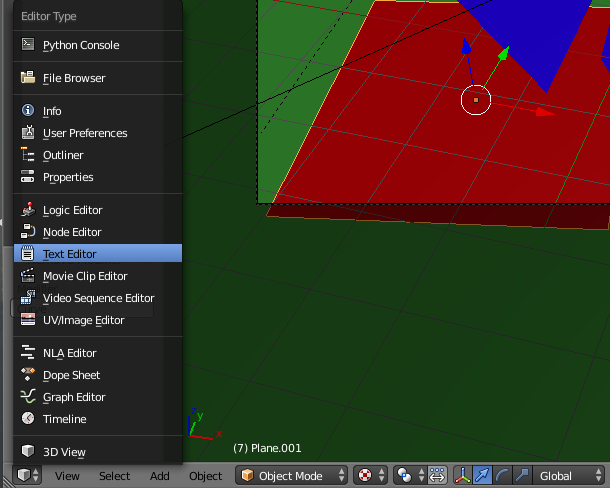
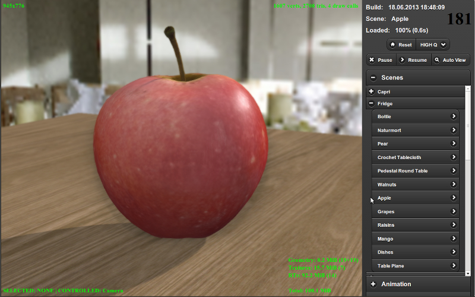

Рабочий процесс¶
Содержание
Создание любого продукта является творческим процессом, в котором могут участвовать множество людей, с различными навыками и опытом. Однако вне зависимости от его сложности и конечного результата, всегда можно выделить стадию производства, на которой создаётся основной объём ресурсов (ассетов) и исходного кода.
При использовании Blend4Web, производственный процесс можно представить следующим образом:
Подготовка трёхмерных сцен в программе Blender.
Экспорт сцен.
Запуск, настройка и отладка сцены в программе-просмотрщике.
Создание целевого веб-приложения.
Подготовка сцен¶
Помимо обычных операций по моделированию, текстурированию, анимации и т.д. должна быть осуществлена подготовка сцены для работы в движке.
Общие рекомендации:
Настоятельно рекомендуется сохранять blend-файлы в директории
blender/имя_проекта. Там же должны находиться вспомогательные файлы, не предназначенные для загрузки в приложение (например, референсы).Изображения и медиа-файлы должны быть внешними и находиться в директории
deploy/assets/имя_проекта.Файл, из которого будет осуществляться экспорт, должен содержать только необходимые в разрабатываемом приложении ресурсы (объекты, материалы, текстуры, анимацию и т.д.).
Составные части сцен должны иметь отличающие названия. Они не должны называться “Cube.001”, “Material”, “Armature”.
Рекомендуется практиковать добавление по ссылке (linking) компонентов из других файлов (библиотек).
Экспорт сцен¶
Процедура экспорта преобразует данные сцены из формата, понятного Blender, в формат, понятный Blend4Web.

Экспорт может осуществляться в два формата: JSON и HTML.
Формат HTML применяется для простых, самодостаточных проектов, в которых все ресурсы упакованы в один файл, который легко можно разместить на веб-странице.
Формат JSON также может применяться для создания подобных проектов, но также он предлагает множество дополнительных возможностей для создания сложных проектов, требующих программирования. Различия между форматами и настройки экспорта описаны в разделе “Форматы экспорта”.
Для экспорта сцены, выберите в меню File > Export опцию Blend4Web (.json) или Blend4Web (.html) либо наберите b4w export в меню поиска команд (вызывается по клавише ПРОБЕЛ).
Примечание
Если сцена использует возможности Blender, не поддерживаемые движком Blend4Web, при экспорте могут возникнуть ошибки. Ошибки экспорта перечислены в этой таблице.
Опции экспорта подробно описаны в соответствующем разделе.
Отображение сцен в просмотрщике¶
При использовании локального сервера разработки возможно сделать предварительный просмотр сцены используя кнопку Fast Preview, расположенную на панели Scene->Development Server в Blender. В этом случае будет произведён автоматический экспорт сцены во временное хранилище с последующей загрузкой в просмотрщике.
Другой способ это использовать опцию экспорта сцены Run in Viewer. В этом случая сцена показывается в просмотрщике сразу после экспорта.
При необходимости долгосрочного хранения сцены в списке сцен просмотрщика, нужно вручную добавить запись в текстовой файл apps_dev/viewer/assets.json, который доступен при открытии Blender’a при использовании Blend4Web SDK.
Для редактирования файла откройте “Text Editor”:
В появившемся окне вы сможете выбрать файл assets.json и отредактировать его:
Для добавления новой сцены нужно знать категорию, в которой она должна отображаться. Категория обычно соответствует названию проекта и имени директории, где хранятся соответствующие файлы.
Пример¶
Ниже приведена примерная часть файла assets.json, в которой находятся два проекта “Capri” и “Fridge” с соответствующими сценами в каждом проекте:
{
name: "Capri",
items: [
{
name: "Baken",
load_file : "capri/props/baken/baken.json"
},
{
name: "Terrain",
load_file : "capri/landscape/terrain/terrain.json"
}
]
},
{
name: "Fridge",
items: [
{
name: "Apple",
load_file : "fridge/fruits/apple/apple.json"
},
{
name: "Mango",
load_file : "fridge/fruits/mango/mango.json"
}
]
}
Добавление можно осуществить копированием и вставкой описания похожей сцены в нужной категории и последующим редактированием ее названия и пути к экспортному файлу.
В случае успешного добавления сцена должна появиться в списке сцен просмотрщика в нужной категории.
{kind=link}
Разработка приложения¶
На этой стадии создаётся приложение, в котором на языке JavaScript пишется логика по загрузке сцены и взаимодействию с ней пользователя. Документация для разработчиков приложений приведена в соответствующем разделе.